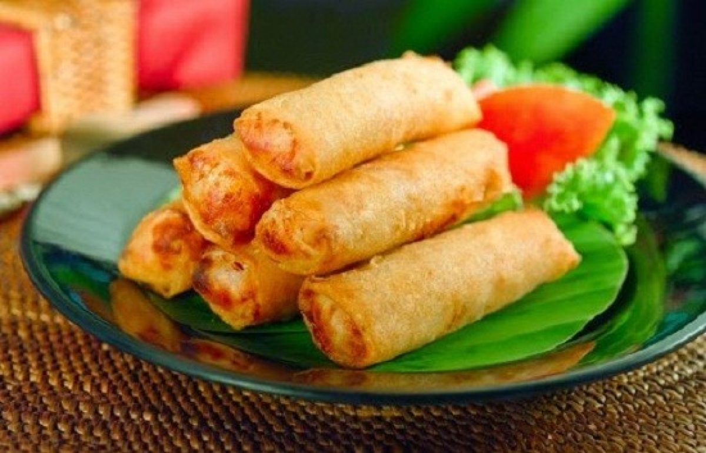

#Story Of Lumpia
Lumpia menjadi makanan khas Semarang bermula dari perkawinan kuliner Tiongkok dan Jawa sejak ratusan lalu.
Sajian bercitarasa manis nan gurih berisi rebung, ayam, udang dan digulung kulit tipis berbahan dasar terigu ini menghiasi di setiap sudut ibu kota Provinsi Jawa Tengah, Semarang. Kudapan ini begitu populer dari dijajakan di kaki lima, restoran, hingga menjadi buah tangan khas kota ini.
Penamaan lumpia atau lunpia berasal dari dialek Hokkian, “lun” atau “lum” berarti lunak dan “pia” artinya kue. Pada awalnya lumpia Semarang tidak digoreng, sehingga sesuai dengan makna lumpia, kue yang lunak.
Modifikasi ini terjadi ketika kuliner Tiongkok dan Jawa berpadu. Citarasa lumpia yang manis juga bagian dari penyesuaian lidah masyarakat setempat. Dirangkum dari banyak sumber, makanan khas kota Semarang ini hadir pertama kali pada abad ke 19 dan merupakan salah satu contoh perpaduan budaya asli Tiong Hoa-Jawa yang serasi dalam cita rasa.
Semua bermula saat Tjoa Thay Joe yang lahir di Fujian, memutuskan untuk hijrah dan tinggal di Semarang dengan membuka bisnis makanan khas Tiong Hoa berupa makanan pelengkap berisi daging babi dan rebung. Tjoa Thay Joe kemudian bertemu dengan Mbak Wasih, orang asli Jawa yang juga berjualan makanan yang hampir sama, hanya saja rasanya lebih manis dan berisi kentang juga udang.